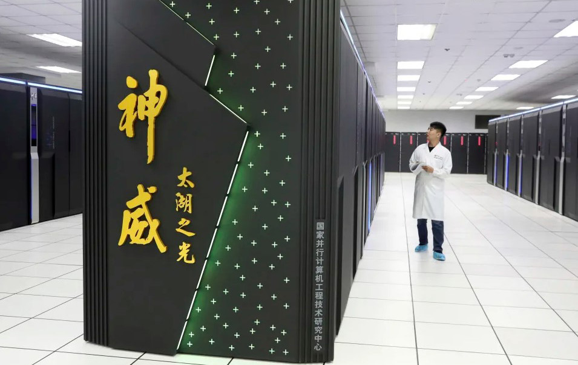
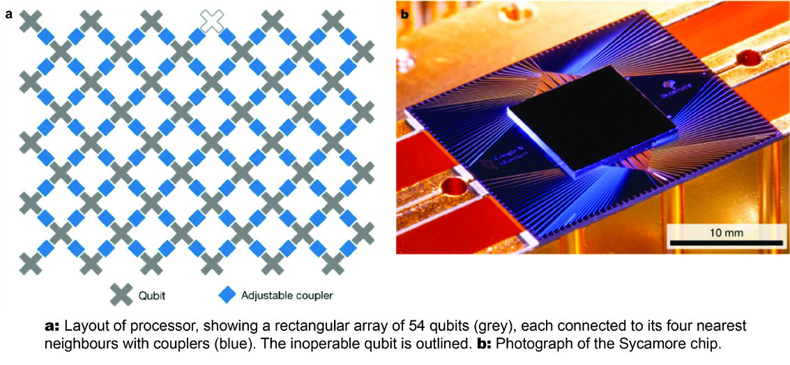
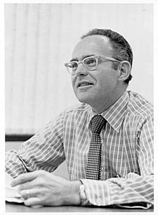
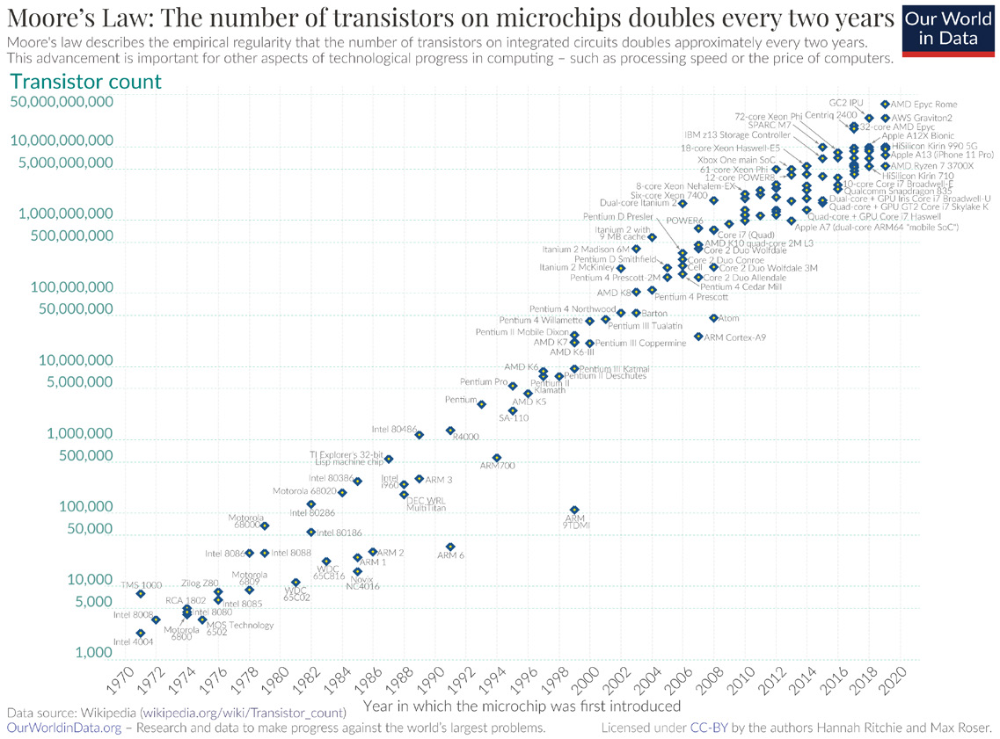

The earlier chapters explained how a qubit holds information, why superposition and entanglement create computational leverage, and which physical platforms are competing to build a useful machine. This chapter steps back from the physics and looks at the field as an industry. Who is building quantum computers, how good are the best machines right now, and is there any reliable way to chart progress the way Moore's Law once charted the rise of the transistor?
A note on timing matters here. The first edition of this book was written in 2021, and even then the authors warned that announcements were arriving faster than they could be documented. That is still true in 2026, only more so. The figures and company claims below are current as of early 2026, and several are flagged "Verify before publication" because the leading edge moves week to week. Treat the named records as snapshots, not permanent facts.
There is still no single winning approach to quantum computing, and that is precisely what makes the field a race rather than a coronation. Contenders range from the largest technology companies on earth to venture-backed startups founded around a single physical idea. They are not all building the same thing. Some build full-stack quantum computers, some sell access through the cloud, some supply control electronics, cryogenics, lasers, or software, and some focus narrowly on error correction or compilation. The ecosystem is wider than the list of "computer makers" suggests.
The 2021 edition pointed readers to a roster that included IBM, Google, IonQ, Honeywell, Intel, Rigetti, Atom Computing, Xanadu, ColdQuanta, D-Wave, Microsoft, PsiQuantum, and others. Most of those names are still in the game, though the landscape has reshuffled. Honeywell's quantum unit merged with Cambridge Quantum to form Quantinuum. ColdQuanta became Infleqtion. Several pure-play hardware companies went public, and a wave of government funding arrived in 2025 and 2026 that changed the financial picture for the whole sector.
Here is where the major players stand in early 2026. The records and figures move quickly, so verify before publication.
IBM remains the most visible full-stack effort. Its public roadmap targets a large-scale, fault-tolerant machine called Starling by 2029, built to run roughly 100 million quantum operations on about 200 logical qubits. The path there runs through intermediate processors (Nighthawk, with a 120-qubit lattice, plus modular building blocks named Kookaburra and Cockatoo) and a strategic shift from surface codes to quantum low-density parity-check (qLDPC) codes, which IBM says can cut the physical-qubit overhead of error correction dramatically. [1] [2]
Google Quantum AI made the headline result of the recent cycle with its 105-qubit Willow chip, announced in December 2024. Willow demonstrated error correction "below threshold," meaning that adding more physical qubits to a logical qubit drove the error rate down rather than up. That had long been the theoretical promise of error correction, and Willow was a clear experimental demonstration of it at scale. [3]
Quantinuum (the Honeywell and Cambridge Quantum combination) builds trapped-ion machines and holds some of the strongest verified error-correction results. As of late 2025 it reported 48 logical qubits encoded in 98 physical qubits on its Helios processor, and it completed a large public offering that valued the company in the tens of billions. [4]
IonQ, also a trapped-ion company, crossed a commercial milestone that no quantum pure-play had reached before: more than $100 million in annual revenue, reported with triple-digit year-over-year growth. By early 2026 its market value was approaching the ten-billion-dollar range. [5]
Atom Computing and QuEra lead the neutral-atom camp. Atom Computing built a system with a 1,225-site atomic array, populated with well over 1,000 atomic qubits, briefly the largest qubit count of any platform. QuEra published a 96-logical-qubit result and demonstrated continuous operation with thousands of atoms, attracting one of the largest hardware funding rounds of the cycle with backing from Google, SoftBank, and NVIDIA's investment arm. [1] [6]
PsiQuantum is pursuing utility-scale photonic machines and is constructing large facilities in Chicago and Brisbane, supported by more than two billion dollars in private funding and a multi-billion-dollar valuation. Rigetti continues with superconducting processors, reporting a 108-qubit multi-chip system at high two-qubit gate fidelity. D-Wave remains the long-standing quantum-annealing specialist, a different machine aimed squarely at optimization. Microsoft took a distinct bet with its topological approach, unveiling the Majorana 1 processor in 2025. Fujitsu and RIKEN in Japan pushed superconducting qubit counts into the hundreds and are working toward a 1,000-qubit system. [6] [7]
The point of the list is not to crown a winner. It is to show that serious capital, serious science, and serious national-strategic attention are all pointed at the same goal from many directions at once. A useful research habit is to read the newsrooms on each company's site directly, because by the time a roster like this is printed, several entries are already out of date.

The clearest way to understand the state of the art is through the milestones the field uses to mark its own progress. The first big one was quantum supremacy, sometimes called quantum advantage: solving a problem that a classical computer cannot realistically solve in any reasonable time.
Google reached that mark in 2019 with its 53-qubit superconducting processor, Sycamore. The task was a contrived one, sampling the output of random quantum circuits, but the result was striking. Sycamore finished in about 200 seconds a calculation Google estimated would take a leading classical supercomputer roughly 10,000 years. IBM disputed the estimate, arguing the same problem could be done in a few days on its Summit machine with smarter classical methods. That back-and-forth is itself instructive: "supremacy" is a moving target, because classical algorithms also improve in response. [8]

A team in China led by Jian-Wei Pan and Chao-Yang Lu pursued a different route to the same kind of claim, using a photonic machine called Jiuzhang. Light-based calculations completed a statistical sampling task that the team estimated would take a top classical supercomputer billions of years. The headline numbers are dramatic, and they are meant to be, but the deeper signal is consistency: multiple independent groups, on entirely different hardware, can now do something no classical machine can match on a carefully chosen problem.
The frontier has since moved from "can we beat a classical computer once" to "can we keep errors under control while scaling up." That is why Google's Willow result in 2024 mattered more than a raw qubit count. Demonstrating error correction below threshold is the engineering precondition for everything that follows, because without it, adding qubits just adds noise. The current race is no longer only about how many physical qubits a chip carries. It is about how many reliable, error-corrected logical qubits a system can sustain, and for how long. [3]
So where does that leave us in 2026? We have machines with over a thousand physical qubits, the first convincing demonstrations of below-threshold error correction, dozens of logical qubits in the best systems, and a handful of companies reporting real commercial revenue. We do not yet have a large, fault-tolerant, general-purpose quantum computer that reliably outperforms classical hardware on a commercially important problem. The honest summary is that the field has crossed from "interesting physics" into "early engineering," with the hardest scaling work still ahead. The open questions the 2021 edition asked still stand. How many qubits will it take to design pharmaceuticals, break or rebuild cryptography, and solve the hardest optimization problems? Nobody knows the exact number, but the trajectory is now clearly upward.
It is tempting to look for a quantum version of Moore's Law. The original observation, made by Intel co-founder Gordon Moore in 1965, was that the number of components on an integrated circuit was doubling at a rapid, regular pace. Moore first framed it as a doubling each year, then revised it in 1975 to a doubling roughly every two years. The prediction held for decades, and it became as much an economic planning tool as a technical one, because Moore had also noted that the cost per component fell as density rose. Advanced chips today carry tens of billions of transistors. [9] [10]


Could qubit counts follow a similar curve? When that question was put to John Levy, head of the superconducting-electronics company SEEQC, his answer was skeptical. The real goal, he argued, is not to track a single number the way Moore's Law tracks transistors. It is to understand whether any metric in quantum computing can reliably predict performance, cost, or capability over time. Right now, he said, the whole notion of benchmarking is still embryonic.
The trouble is that a raw qubit count tells you very little on its own. A machine with a thousand noisy, poorly connected qubits may do less useful work than one with a hundred clean, well-connected ones. IBM proposed quantum volume to capture more of the picture, a single figure that folds in qubit count, gate and measurement error, crosstalk, and connectivity, and which IBM showed could double with some regularity. But even quantum volume has blind spots. It does not account for speed. A trapped-ion system may have excellent coherence and a high quantum volume, yet run so slowly that a calculation taking seconds on a superconducting chip could take months on the ion machine. A fair benchmark has to weigh quality, scale, connectivity, and speed together, and no single accepted standard does all of that yet.
There is a deeper reason to be cautious. There is no industry-wide standard because vendors naturally favor benchmarks that flatter their own technology. Read any benchmark claim with that incentive in mind. Serious, neutral work on the problem is underway. Standards bodies such as NIST and various international laboratories are the most likely sources of a credible, technology-agnostic benchmark, and other industry groups are expected to join the effort. Until then, the field has no Moore's Law for qubits, and, more importantly, no universal benchmark at all.
A final irony is worth noting. Even classical computing's Moore's Law is now widely considered dead, or at least dying, with organizations like MIT and NVIDIA among those who say its exponential era is over, while Intel has argued it can keep the trend alive for another decade. So the honest answer to "is there a Moore's Law for qubits" is that the field is still searching for the right thing to measure, and it would be unwise to expect a clean exponential before we even agree on the axis.
Going Deeper - Logical versus physical qubits
When you read that a system has "1,000 qubits," ask whether those are physical or logical. A physical qubit is one piece of quantum hardware: a single ion, atom, or superconducting circuit. A logical qubit is an error-corrected unit built from many physical qubits working together, with the redundancy needed to detect and fix errors. The conversion factor is large. Today's best results encode a few dozen logical qubits out of roughly one hundred physical ones, and future fault-tolerant designs may need hundreds or thousands of physical qubits per logical qubit. This is why "qubit count" headlines can mislead, and why error-correction milestones like Google's Willow matter more than the raw physical number.
BNC in Practice - Instrumentation behind the qubit
Every record-setting qubit in the labs above depends on a stack of precise classical electronics: stable timing, clean signal generation, and low-noise measurement. Berkeley Nucleonics builds timing and signal-generation instruments used in demanding physics and metrology environments. For the exact models, performance figures, and suitability to a given quantum-control setup, verify against the current BNC datasheet and talk to a BNC engineer rather than relying on any specification quoted here.
Take it interactively. The quiz lives on its own page with hidden answers - write your attempt first (even four characters works), then reveal. Self-graded. About 10 minutes.
Or read the questions and answers inline below (preserved for print and offline use).
[1] SpinQuanta, "Discover the World's Largest Quantum Computer in 2025." Verify before publication.
[2] IBM Quantum, "IBM lays out clear path to fault-tolerant quantum computing" and IBM Quantum roadmap, 2025. Verify before publication.
[3] Google, "Meet Willow, our state-of-the-art quantum chip," December 9, 2024; "Quantum error correction below the surface code threshold," Nature (2024). Verify before publication.
[4] Quantinuum press materials, Helios processor logical-qubit result and Nasdaq listing, November 2025. Verify before publication.
[5] IonQ investor and news releases, 2025-2026 revenue and market-capitalization figures. Verify before publication.
[6] QuEra and Atom Computing announcements, 2025-2026, including QuEra's 96-logical-qubit Nature result (January 2026). Verify before publication.
[7] Microsoft Azure Quantum, "Microsoft unveils Majorana 1," February 19, 2025; Fujitsu and RIKEN 256-qubit superconducting computer, April 2025; Rigetti Cepheus-1 processor announcement, early 2026. Verify before publication.
[8] Google, "Quantum supremacy using a programmable superconducting processor," Nature (2019); IBM rebuttal. Verify before publication.
[9] G. E. Moore, "Cramming more components onto integrated circuits," Electronics (1965); revised projection, 1975. Verify before publication.
[10] Our World in Data, "Moore's Law: The number of transistors on microchips doubles every two years" (transistor-count chart, CC-BY, Hannah Ritchie and Max Roser). Verify before publication.